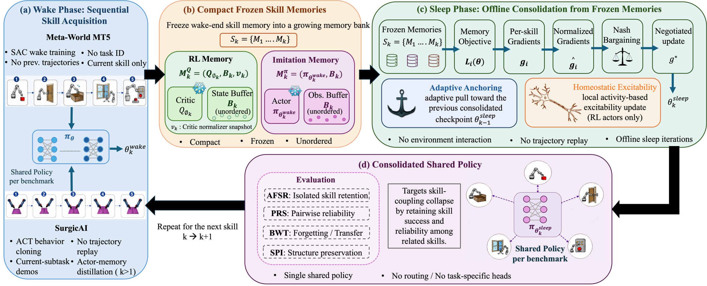
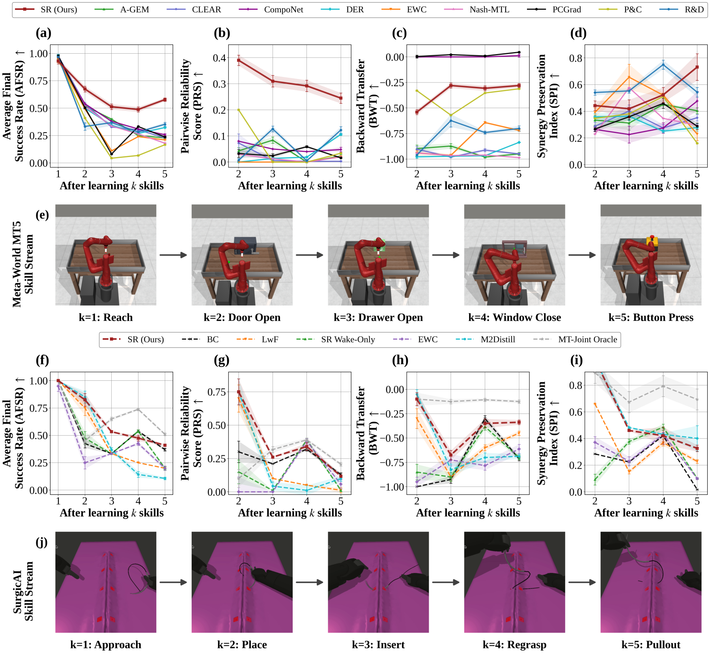

Robots that learn skills one after another can keep each skill partly working while losing the ability to perform related skills reliably together. Sleeping Robots learns each new skill while awake, then consolidates one shared policy offline during sleep from compact frozen skill memories - no trajectory replay, no task-specific heads, no extra environment interaction.
Robots that learn over long deployments must add new skills without losing the shared policy structure that makes earlier skills reusable. We study sequential robot skill learning, where previous trajectories and task losses may be unavailable, and the deployed policy must remain a single shared controller without task-specific heads, routing, or adapters.
We identify skill-coupling collapse, a failure mode in which individual skill success remains non-trivial while reliability among related skills deteriorates. We propose Sleeping Robots, a wake-sleep framework that learns each new skill during wake and consolidates the shared policy offline during sleep using compact frozen skill memories: frozen critics with unordered state buffers for reinforcement learning and frozen actor snapshots with unordered observation buffers for imitation learning. During sleep, these memories define differentiable surrogate objectives whose gradients are combined through Nash bargaining, with adaptive anchoring and local excitability for stable consolidation.
On Meta-World MT5, Sleeping Robots improves average success by 64% and pairwise reliability by 2.0× over the strongest non-oracle baseline, and on SurgicAI it improves average success and backward transfer relative to continual imitation baselines while remaining competitive on pairwise reliability.

Side-by-side rollouts of the final shared policy on every skill it has learned.
Final performance after each five-skill stream, mean ± standard error over three seeds. AFSR = average final success rate, PRS = pairwise reliability score, BWT = backward transfer, SPI = synergy preservation index. Higher is better. Bold = best, underlined = second-best.

| Method | AFSR ↑ | PRS ↑ | BWT ↑ | SPI ↑ |
|---|---|---|---|---|
| EWC | 0.210 ± 0.001 | 0.021 ± 0.000 | −0.719 ± 0.008 | 0.229 ± 0.048 |
| A-GEM | 0.229 ± 0.007 | 0.023 ± 0.006 | −0.949 ± 0.014 | 0.404 ± 0.022 |
| DER | 0.323 ± 0.005 | 0.106 ± 0.004 | −0.836 ± 0.002 | 0.214 ± 0.059 |
| CLEAR | 0.229 ± 0.004 | 0.003 ± 0.002 | −0.949 ± 0.008 | 0.347 ± 0.038 |
| Reset & Distill | 0.353 ± 0.018 | 0.123 ± 0.013 | −0.700 ± 0.025 | 0.504 ± 0.060 |
| Progress & Compress | 0.166 ± 0.000 | 0.034 ± 0.000 | −0.312 ± 0.000 | 0.160 ± 0.000 |
| Nash-MTL | 0.180 ± 0.000 | 0.020 ± 0.000 | −0.985 ± 0.000 | 0.295 ± 0.000 |
| PCGrad | 0.237 ± 0.004 | 0.016 ± 0.020 | +0.046 ± 0.005 | 0.288 ± 0.023 |
| CompoNet | 0.257 ± 0.011 | 0.048 ± 0.009 | +0.012 ± 0.014 | 0.477 ± 0.073 |
| Sleeping Robots (Ours) | 0.578 ± 0.016 | 0.245 ± 0.020 | −0.280 ± 0.020 | 0.767 ± 0.017 |
| Method | AFSR ↑ | PRS ↑ | BWT ↑ | SPI ↑ |
|---|---|---|---|---|
| Sequential BC | 0.370 ± 0.013 | 0.129 ± 0.014 | −0.713 ± 0.020 | 0.017 ± 0.010 |
| EWC | 0.217 ± 0.020 | 0.057 ± 0.034 | −0.613 ± 0.048 | 0.099 ± 0.007 |
| LwF | 0.200 ± 0.010 | 0.012 ± 0.020 | −0.450 ± 0.022 | 0.228 ± 0.014 |
| M2Distill | 0.107 ± 0.012 | 0.099 ± 0.020 | −0.688 ± 0.024 | 0.401 ± 0.095 |
| SR Wake-Only (ablation) | 0.200 ± 0.015 | 0.012 ± 0.010 | −0.700 ± 0.020 | 0.101 ± 0.006 |
| Sleeping Robots (Ours) | 0.410 ± 0.010 | 0.117 ± 0.012 | −0.338 ± 0.024 | 0.326 ± 0.024 |
| MT-Joint (oracle) | 0.510 ± 0.013 | 0.207 ± 0.014 | −0.125 ± 0.017 | 0.693 ± 0.079 |
MT-Joint is an oracle with joint access to all skills, not a continual-learning method, and is excluded from best / second-best.
@inproceedings{jayasinghe2026sleeping,
title = {When Robots Sleep: Offline Skill Consolidation
for Shared-Policy Robot Learning},
author = {Jayasinghe, Nethmi and Gontero, Diana and Trivedi, Amit Ranjan},
booktitle = {Conference on Robot Learning (CoRL)},
year = {2026},
eprint = {2606.17493},
archivePrefix = {arXiv},
primaryClass = {cs.RO}
}